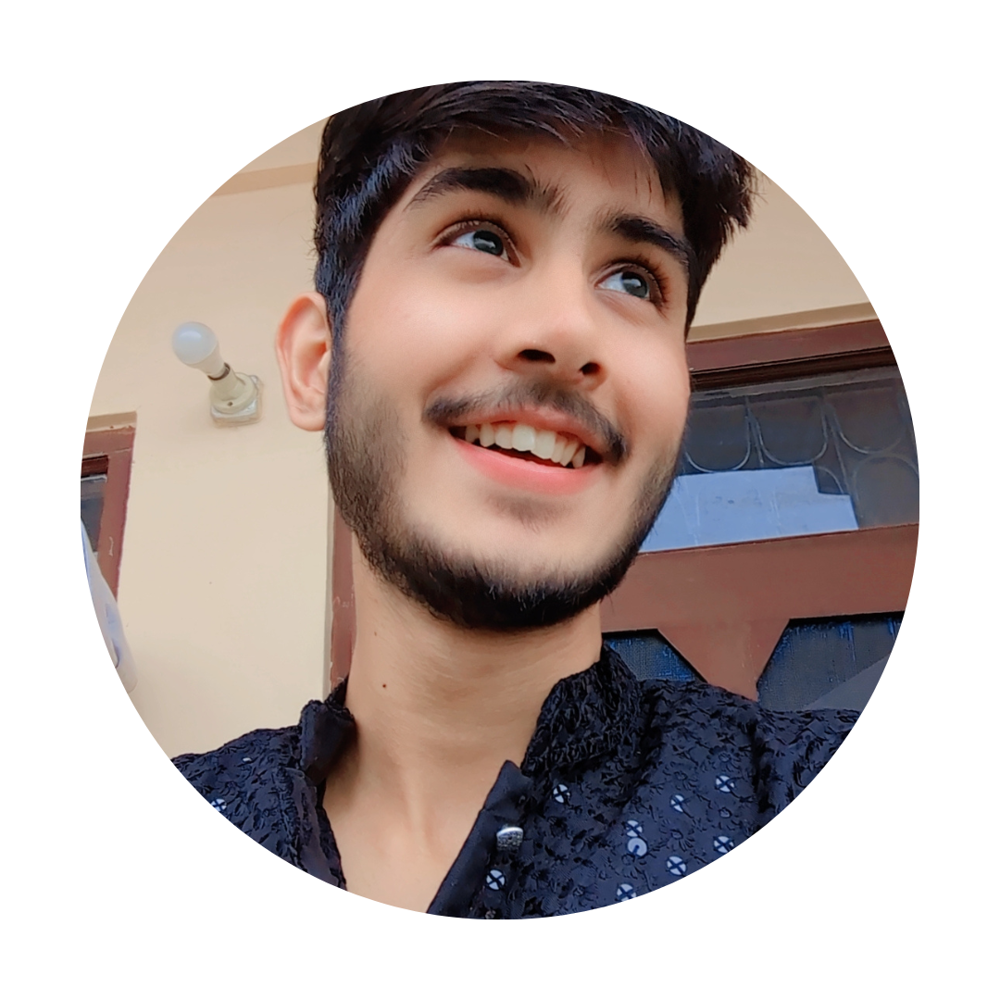
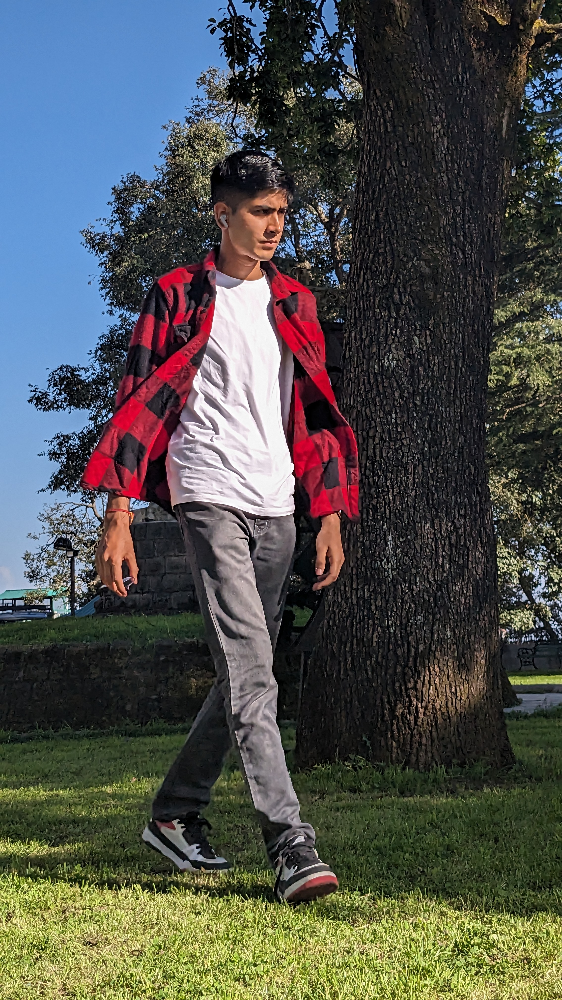

Hello, I'm
Rijul Sen
I am a



Hello, I'm
I am a
Get To Know More


1.5+ years
Outside World! 🌎

B.B.A Bachelors Degree (pursuing)
Company Secretary (pursuing)
Greetings! I'm a third-semester student pursuing
a Bachelor's degree in Business Administration (BBA) at UCBS Shimla,
and I'm also on the path to becoming a Company Secretary (CS) as a CS Executive student.
I'm not a typical student - I'm a globetrotter with a passion for diplomacy and a love for books.🌍🌐📚✈️🤝
Let's embark on this exciting journey together!
Explore My
Diplomacy, the art of negotiation and international relations have always fascinated me.
My interest in diplomacy has led me to delve deeper into international affairs,
attend Model United Nations (MUN) conferences, and stay informed about global diplomacy developments.
I aspire to make a meaningful contribution to this field,
promoting global cooperation and understanding.
Dr. S. Jaishankar has always been my inexhaustible source of inspiration.
His remarkable career, dedication to diplomacy
and leadership have shaped my own aspirations and desire to achieve excellence.
I am continually inspired by their commitment to making a positive impact on the world.
Dr. S. Jaishankar is a true epitome of excellence and a role model whom I respect.
Books and travel are my twin passions, and they have woven a colorful tapestry into the fabric of my life.
Books:
My heart belongs to the world of literature, and I find solace and adventure in its pages.
Ajay K. Authors like Pandey, with his poignant storytelling, William Shakespeare, with his timeless classics,
and Colleen Hoover, who weaves captivating contemporary stories, have taken me on unforgettable journeys.
Travel:
It's about embracing diverse cultures, tasting local cuisine and
building relationships with people from all walks of life.
Through travel, I have not only discovered the world but also gained a deeper understanding of myself.
Get in Touch